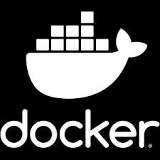

Projets récents
Snake Dans Le Terminal
Programmation d'un jeu de "Snake" en langage C dans le terminal.

Snake automatisé dans le terminal
Modification du snake (deux serpents et automatisé) pour un jeu automatique et opimisé.
Traitement de fichier automatique
Mise en place d'une chaine de traitement de fichiers automatique (docker/bash).
Création Base De Données
Création d'une base de données à partir d'un diagramme UML puis analyse et calculs dessus.

Imitation site JO
Recueil des besoins depuis une interview d'un commanditaire puis développement d'un site pour les JO.